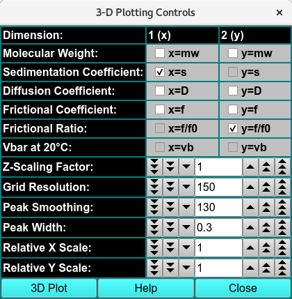
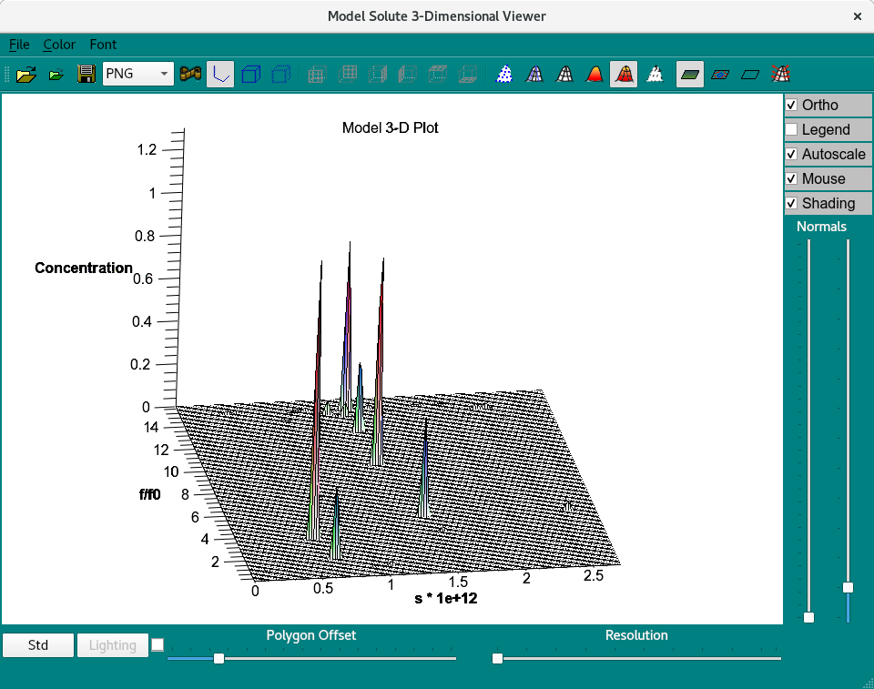

3-Dimensional Plot Controls:¶
Upon completion of FE Match simulation, a pair of enhanced plot controls dialogs appears. The 3D Plot button in the first of these launches a 3-dimensional plot window whose primary control resides in this dialog. There are size, orientation, and other controls that are in the 3D dialog itself. A second dialog displays a set of data and residuals plots that are more refined and controllable than those in the main FE Match window.

3-D Plotting Controls
3D Plot Control Functions:¶
Dimensions: |
The five pairs of check boxes allow the user a way to set the 3D plot X and Y dimension value types: MW; s 20,w; D 20,w; f; and f/f 0. |
Z-Scaling Factor: |
Set the scale factor for 3D Z values, to increase/decrease peak extents relative to X and Y. |
Grid Resolution: |
Set the number of pixels in X and Y for which Z raster values are calculated. |
Peak Smoothing: |
Set the smoothing factor applied to peaks. |
Peak Width: |
Set the factor that governs the spread of peaks. |
3D Plot |
Click this button initially to launch the 3D-plot window. Thereafter, when dimension value or other settings are changed, click this button for a re-draw of the 3D plot. |
Window Controls
Help |
Display this detailed Fit Meniscus help. |
Close |
Close all windows and exit. |
Model Solute 3-Dimensional Viewer¶

Model Solute 3-Dimensional Viewer
Keys to control view:¶
Shft + Mouse scroll wheel - expand the z dimension (Concentration in the 3-D Viewer)
Alt + hold left mouse key and move right - expand X axis (sedimentation - s*1e+12)
Alt + hold left mouse key and move left - contract X axis
Alt + hold left mouse key and move up - expand Y axis (Fricitional ratio - f/f0)
Alt + hold left mouse key and move down - expand Y axis
Mouse scroll wheel - zoom in on all Dimensions
Hold left mouse key and move up/down - rotate X axis
Hold left mouse key and move left/right - rotate along Y axis